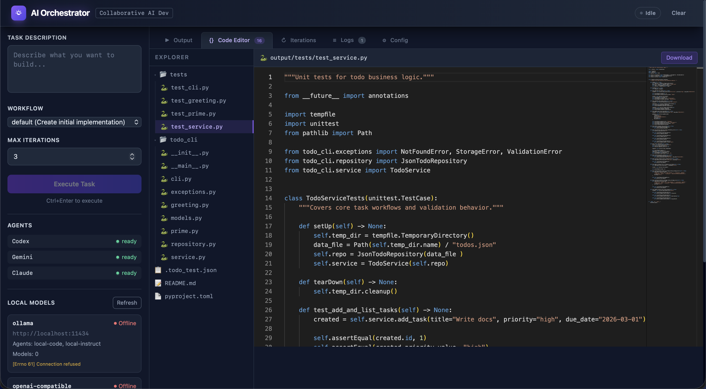
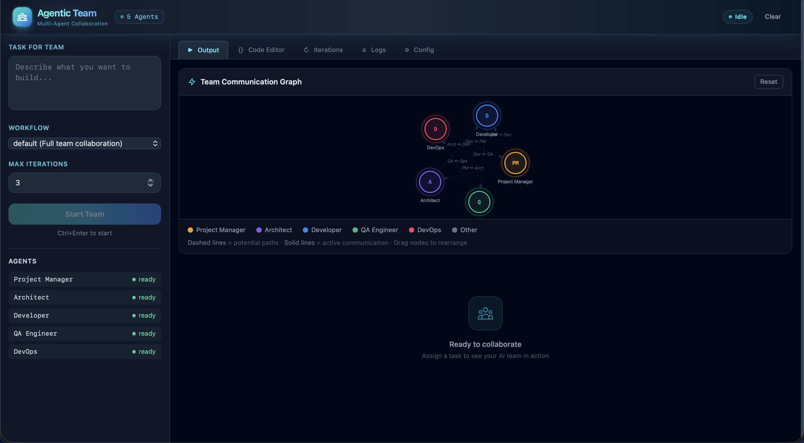
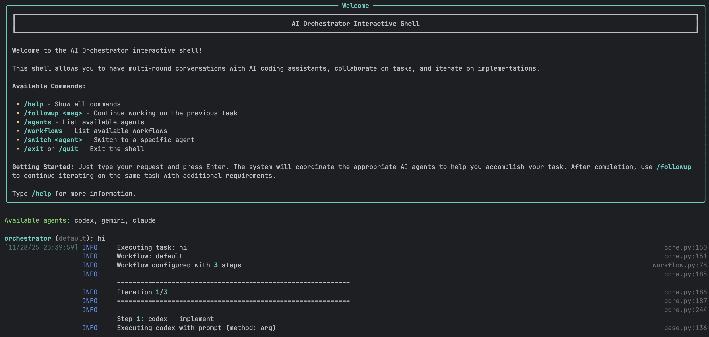
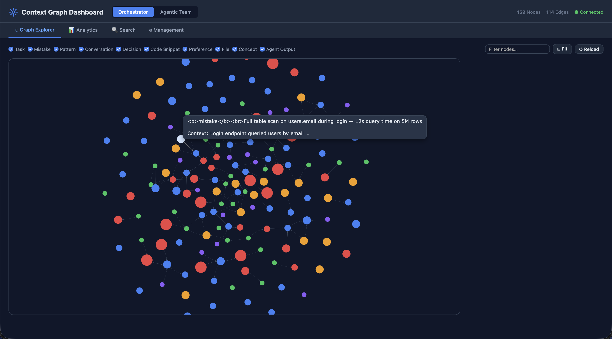
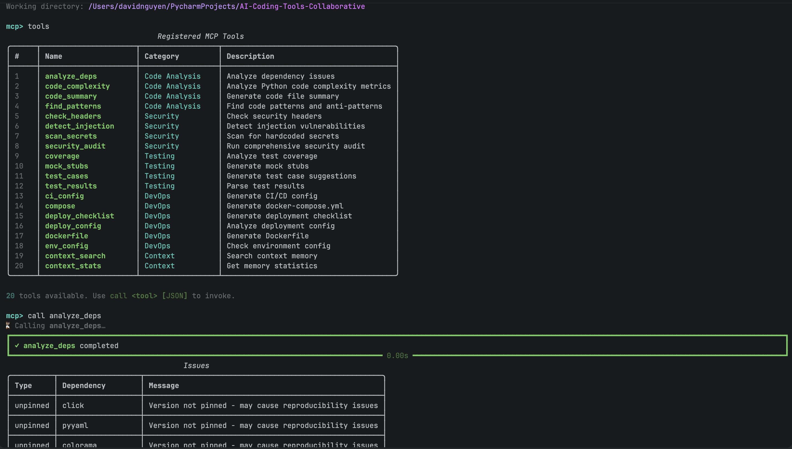

Screenshots
Selected product views from the repository screenshot set to give a quick visual tour before diving into architecture and implementation details.

Web UI Dashboard
Workflow controls, live updates, file management, and editor integration in one interface.

Agentic Team Runtime
Role routing, communication graph, and turn timeline for multi-role execution.

Interactive Shell
Conversation-first command flow for incremental implementation and follow-up tasks.

CLI Execution Pipeline
Structured orchestration output showing workflow progress and generated artifacts.

Context Graph Dashboard
Interactive knowledge graph visualization with node inspection, analytics charts, and hybrid search across both systems.

MCP Tools REPL
Interactive MCP console for exploring and testing 34+ tools across both orchestrator and agentic team engines.